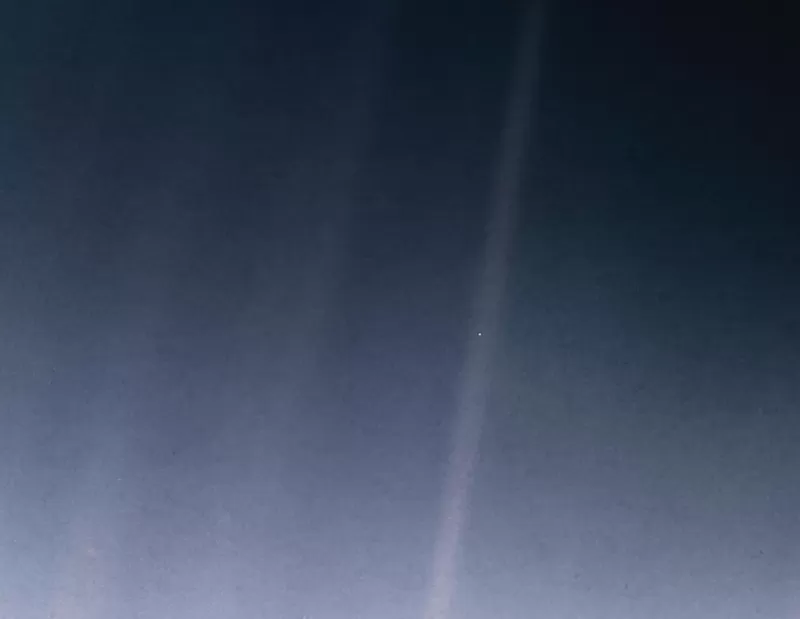

O Planeta Terra é um dos planetas que fazem parte do Sistema Solar e é o terceiro planeta mais próximo do Sol. A sua formação ocorreu há bilhões de anos, assim como a existência de vida aqui. Algumas teorias explicam sua origem, como a teoria da nebulosa solar.
Características da Terra

A Terra é considerada um planeta telúrico e possui sua estrutura interna dividida em: crosta terrestre, manto e núcleo. Além da estrutura interna, há também a externa que corresponde à litosfera, hidrosfera, biosfera e atmosfera, que são o que oferece as condições favoráveis para a existência de vida aqui. "O Planeta Terra, também conhecido como mundo, planeta azul ou planeta água, tem cerca de 70% da sua superfície coberta por água. A existência dessa substância em seu estado líquido, juntamente à presença do oxigênio e a capacidade de reciclar gás carbônico fazem da Terra um planeta com características únicas.

Apesar das grandes descobertas astronômicas, não há ainda como afirmar que exista um planeta com características tão peculiares capaz de propiciar a existência dos seres vivos. E a Terra não é “viva” apenas sob a ótica biológica, mas também sob a ótica atmosférica, geológica e física, uma vez que tudo isso está em constante transformação."

Além de apresentar condições favoráveis à existência de vida, a Terra também possui recursos naturais (renováveis e não renováveis) que propiciam a manutenção dessa existência. É por meio desses recursos que os seres vivos mantêm-se, pois são retirados recursos minerais, fontes de energia, alimento, entre outros. Em meio à história evolutiva, o homem adaptou-se às condições apresentadas pela Terra e aprimorou suas habilidades, retirando dela aquilo que era necessário à sua sobrevivência de forma cada vez mais precisa.
O Pálido Ponto Azul é uma fotografia da Terra tirada em 14 de fevereiro de 1990 pela sonda Voyager 1, de uma distância de seis bilhões de quilômetros (40,5 AU) da Terra, como parte de uma série de imagens do Sistema Solar denominada Retrato de Família. Nessa fotografia, o tamanho aparente da Terra é menor do que um pixel; o planeta aparece como um pequeno ponto na imensidão do espaço, no meio de um raio solar captado pela lente da câmera. A Voyager 1, que tinha completado sua missão principal e estava deixando o Sistema Solar, recebeu comandos da NASA para virar sua câmera e tirar uma última fotografia da Terra em meio a vastidão espacial, a pedido do astrônomo e escritor Carl Sagan, autor do livro Pale Blue Dot.
